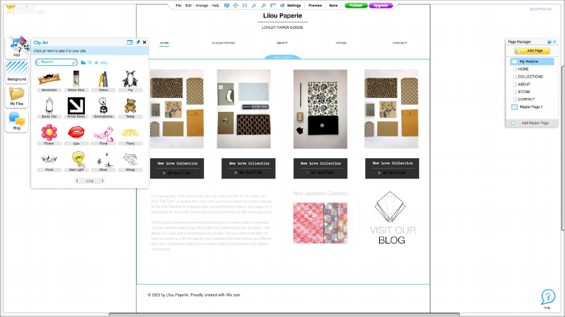
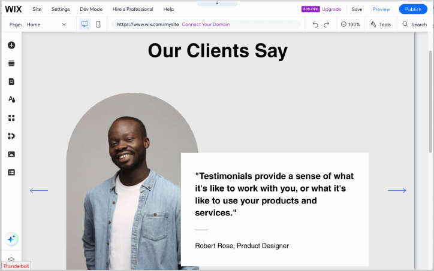

Project
Harmony
Rebuilding the Wix Editor workspace for the AI era.

Netta Witztum
Six years at Wix - a path from visual craft to systems thinking to leadership. Project Harmony asked me to bring all three at once.
B.A. from Shenkar.
Studio work. Strategic thinking.
Wix. Senior designer.
Team of 4. Workspace owner.
Owning the whole. Not a feature.
Workspace architect · coherence owner · function gatekeeper
8 domains. 1 editor.
No direct authority - just clarity.
I owned every surface in the workspace - and how they add up to one editor, on every screen.


What you'll see today
One story. One theme. Everything connected.
The problem we faced
The principle we built on
Three decisions
The hardest part
How we work with AI
The result
Balancing opposites. AI and human. Beauty and function. Clarity through systems thinking.
18 years. Same foundation. More features.




Every generation added - never subtracted. Same infrastructure, exponentially more features, and users left overwhelmed.
The market shifted - we had to rebuild
Three forces hit at once. Patching the old system wasn't an option anymore.
AI searches exploded
Monthly searches for "AI website builder," up from near-zero in 18 months.
Market share dropped
Wix's estimated share of new DIY sites fell 11 points, 2020 to 2023.
Legacy infrastructure
A decade of UI debt - the old foundation breaking under the weight.
Harmony, in three pillars
AI alongside, never instead - applied three ways. Every decision flowed from these.
AI in the front
Always-on, it acts on the canvas with real changes, and it never blocks the editor.
The stage is hero
The user's work stays front and center; everything else has to earn its place.
Simple systems
Three panel types, fixed rules - clarity instead of chaos.
Letting go of the iconic
The floating buttons attached to every selected element were the most recognizable piece of the Wix Editor - and we removed them.
The stage is the hero
- 01
No permanent side panels
We refused docked panels and persistent chrome. The user's site gets the screen.
- 02
Gatekeeping by design
The architecture itself became the "no" - if it isn't serving the stage, it doesn't get a fixed spot.
- 03
Calm over clutter
Entry points stay small and peripheral; tools appear when needed and get out of the way.
Three panel types. That's it.
All panel behavior reduced to a small, closed set - each with fixed rules for position, size, and what happens to the stage. Every product maps onto one of them.


And a deeper conflict
Three camps, all right - pulling the same workspace in three directions.
“Novel interactions, edge cases - we don't know what works yet.”
“Use standards. Reusable. Build once, use everywhere.”
“Push boundaries. Be beautiful. Stand out.”
How I managed the conflict
I was the gatekeeper of function - not aesthetics, not trends. Three questions decided everything.
Everything else was negotiable. Teams saw clarity, not restriction - and shipped better work. That's leadership without authority.
Wix Harmony, by the numbers
The number that matters is the one users vote with.
Premium upgrades vs. the previous editor
Users chose to pay more for Harmony than for the editor before it. That's the principle working - not a vanity metric.
Leading the team to work with AI
- 01
Explore in Claude Design
I map patterns and flows at scale - testing directions before the team commits.
- 02
I prototype in Claude Code
I test edge cases in real code before we commit to a design - the AI surfaces what breaks.
- 03
Lead by doing
I use the tools firsthand and bring the team with me - staying ahead of the curve, not admiring it.
Clarity beats heroics.
Systems scale better than features.
Principles beat rules.